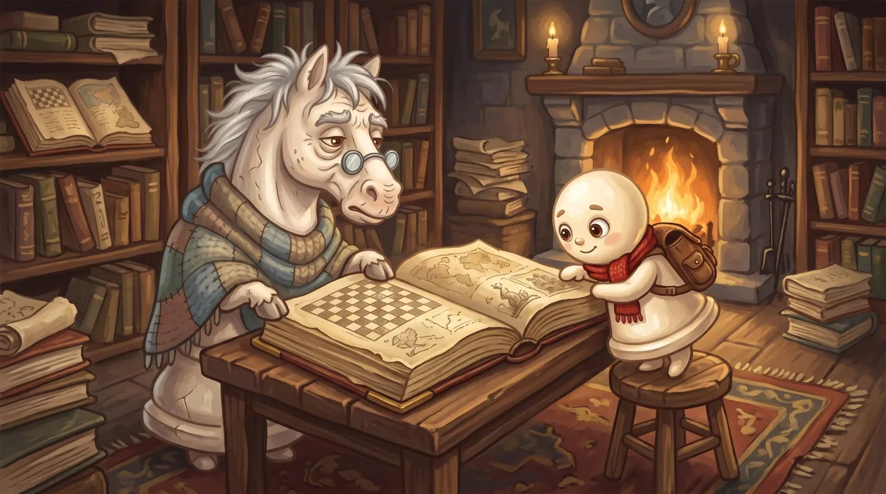
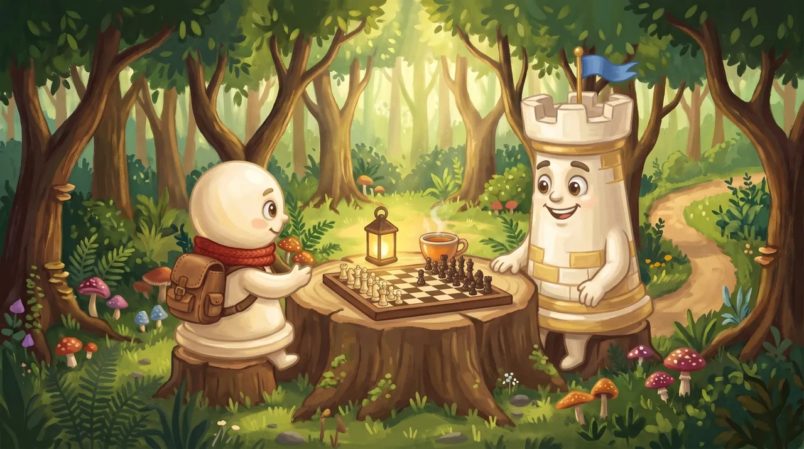
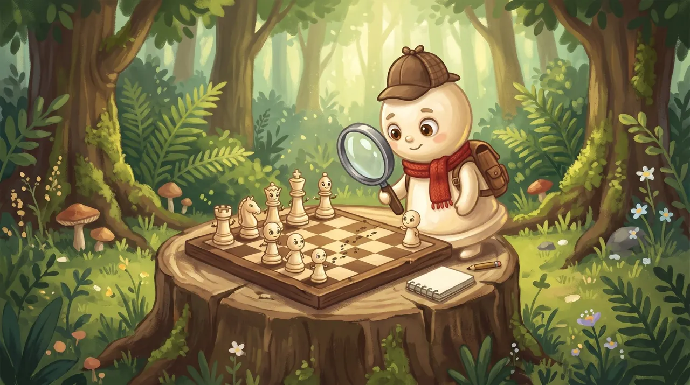
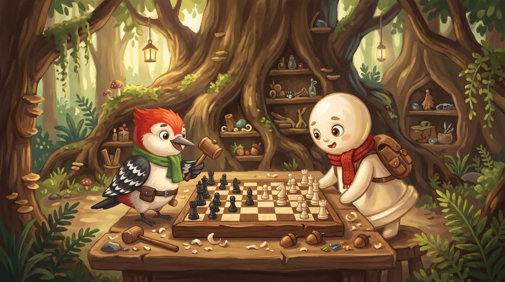
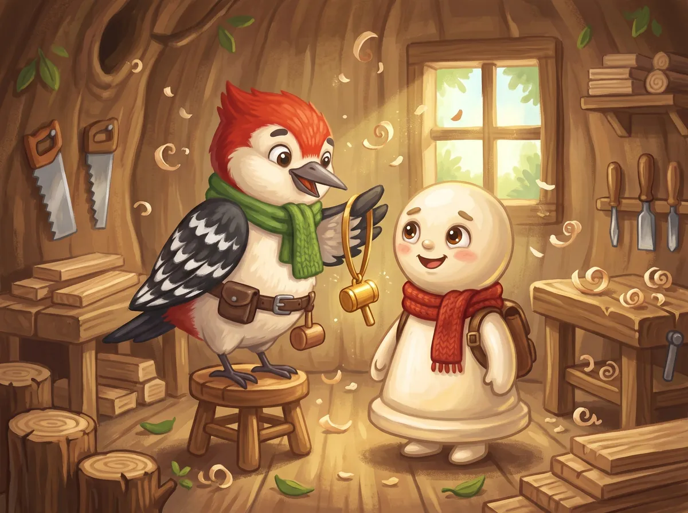
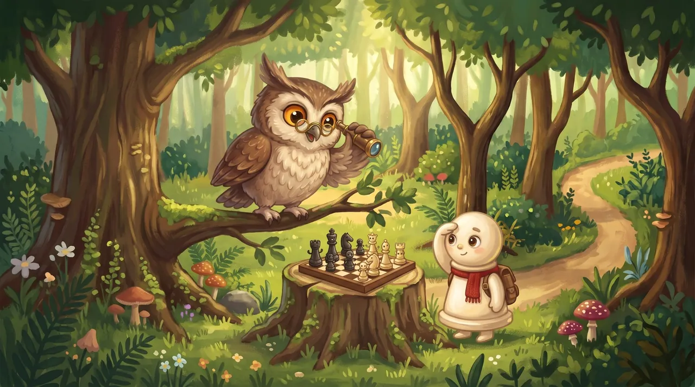
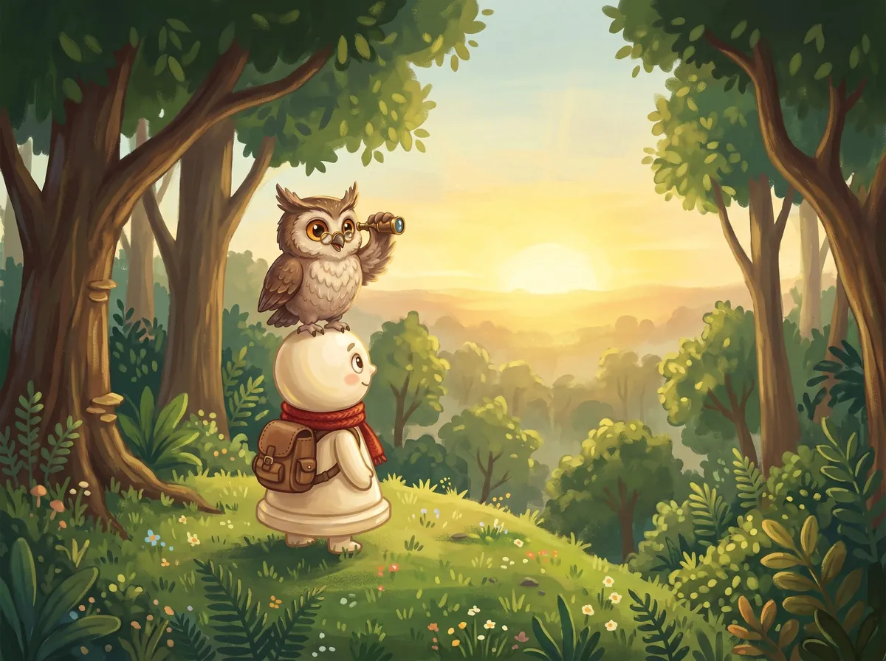
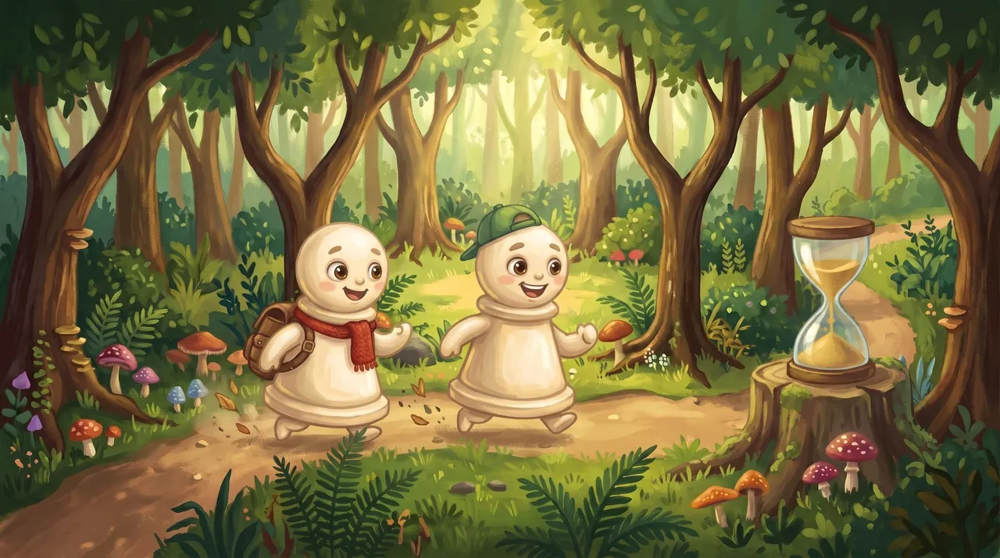
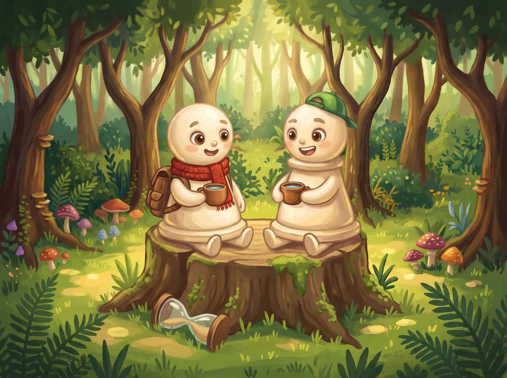

Partie, chyby a puzzle pre každého hráča na jednom mieste. Stockfish rozoberie partiu a v Pokroku vidno, ako sa hráč zlepšuje.
Téma aplikácie
Zvuky a hudba
Nový profil hráča
Pripájam databázu…
Nová partia
uložená partia
Kľúčové momenty
Ťahy

Štúdie
Kapitoly
Ťahy a varianty
Nová pozícia (FEN alebo PGN)
Export
FEN aktuálnej pozíciePGN s variantmi

Porazíš súpera a odomkne sa ďalší, silnejší. Výhra sa počíta bez vracania ťahov a bez nápovedy najlepších ťahov.
Najlepšie ťahy teraz
Ťahy
Detektív: moment z tvojej partie


Ďateľ – opakuj a zrýchľuj
Vyber si sadu úloh a vyrieš ju celú. Potom ju rieš znova od začiatku, zakaždým rýchlejšie a presnejšie. Úlohy sa nemenia, aby si si vzory zapamätal a nakoniec ich videl na prvý pohľad. Časomiera nič nezastaví, len meria tvoj čas.

Cyklus dokončený!

Hrozby – čo chce súper?
Dva druhy krátkych úloh. Čo hrozí? Najprv zahraj súperov ťah, ktorým ti hrozí (alebo klikni „Nič nehrozí“), potom sa bráň. Je ťah bezpečný? Šípka ukáže ťah, ty povieš áno alebo nie. Ak nie je bezpečný, ukáž, ako ho súper potrestá. Kolo má 4 úlohy, každá správna je za 10 bodov.

Kolo hrozieb skončilo

Jednoťahové rýchlovky
Jednoduché úlohy na jeden ťah: mat jedným ťahom alebo získanie figúrky. Na každú máš 10 sekúnd. Správne riešenie +3 body, zlý ťah alebo koniec času −1 bod. Kolo má 20 úloh.
0

Kolo skončilo
Úlohy, ktoré nevyšli
Klikni na úlohu, pozri sa na šachovnicu a skús nájsť ťah bez časomiery.
Tvoj puzzle rating
900
Táto úloha
—
Hádaj ťah majstra
Prehraj si slávne partie veľmajstrov a v kľúčových momentoch skús uhádnuť, aký ťah majster zahral. Za každý uhádnutý ťah na prvý pokus získaš 3 body!
0
Partia dohratá!
Pridať puzzle z pozície (FEN)
Export puzzle (PGN pre Lichess štúdiu)
Úroveň
♟︎
Pešiak
Ako získať body
vyriešený puzzle aj úloha Hrozby: 10 bodov
splnená denná misia: 50
partia v otvorení: 20, voľná partia so Stockfishom: 15, výhra navyše 10 × sila